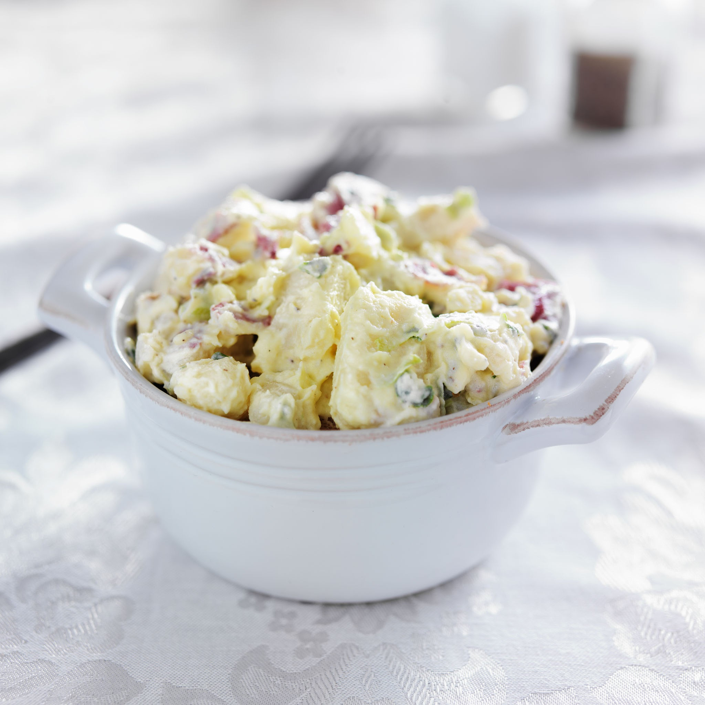

Potato Salad Recipes

Description
There are many ways to make potato salad, but if you're looking for a traditional, mayonnaise-based potato salad made with hard-boiled eggs, celery, and a little pickle relish for zing, you've landed on the right recipe. With more than one thousand ratings and nearly a thousand reviews from our Allrecipes community of home cooks, this recipe for Old-Fashioned Potato salad is a proven winner. And it's so easy to make using everyday ingredients. I'll show you how to make Old-Fashioned Potato salad, with loads of tips all along the way. Plus, I'll share tips for storing and freezing potato salad. (Yes, you can freeze potato salad!)
Ingredients
- Medium Potatoes
- Large Eggs
- Chopped Celery
- Chopped Onion
- Sweet Pickle Relish
- Mayonnaise
- Mustard
- Garlic and Celery Salt
- Ground Black Pepper to taste
Steps
- Gather all ingredients
- Bring a large pot of salted water to a boil, Add potatoes and cook until tender but still firm, about 15 minutes.
- Drain, cool, peel and chop potatoes.
- While potatoes cook, place eggs in a saucepan and cover with cold water. Bring water to a boil; cover, remove from heat, and let eggs stand in hot water for 10 to 12 minutes.
- Remove from hot water, cool, peel, and chop eggs.
- Combine the potatoes, eggs, celery, onion, relish, mayonnaise, mustard, garlic salt, celery salt, and pepper in a large bowl. Mix together well and refrigerate until chilled.
- Enjoy!